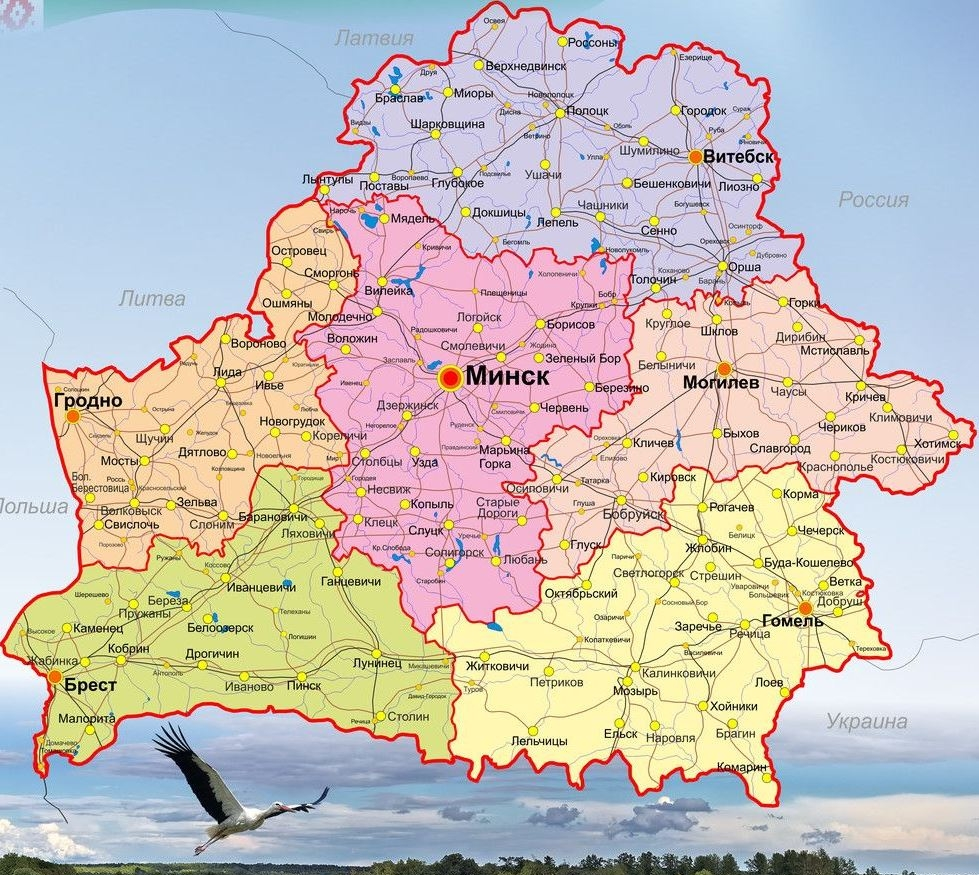

Каждый элемент <area> определяет активные области изображения, которые являются ссылками. Рисунок с привязанными к нему активными областями называется в совокупности картой-изображением. Такая карта по внешнему виду ничем не отличается от обычного изображения, но при этом оно может быть разбито на невидимые зоны разной формы, где каждая из областей служит ссылкой.
Тег <area>задает форму области, ее размеры, устанавливает адрес документа, на который следует сделать ссылку, а также имя окна или фрейма, куда браузер будет загружать документ. Этот тег всегда располагается в контейнере <map>, который связывает координаты областей с изображением.
Раccмотрим указанные свойства на рисунке ниже. Названия областных городов кликабельны, по клику на название города можно получить дополнительную информацию о нем из Википедии.
Приграничные области также кликабельны, по клику на них можно получить информацию о соседях Республики Беларусь.
